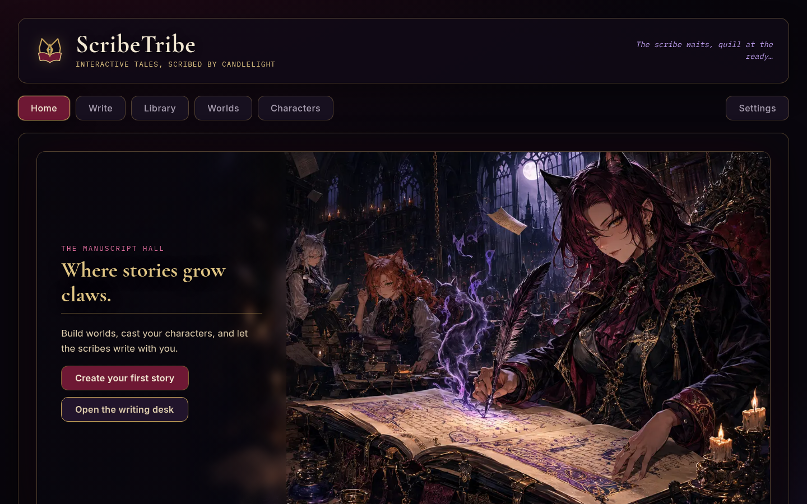
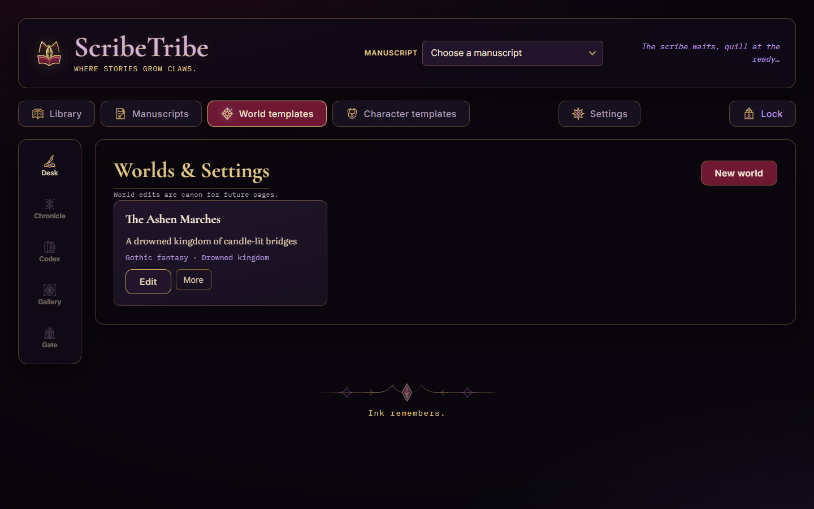
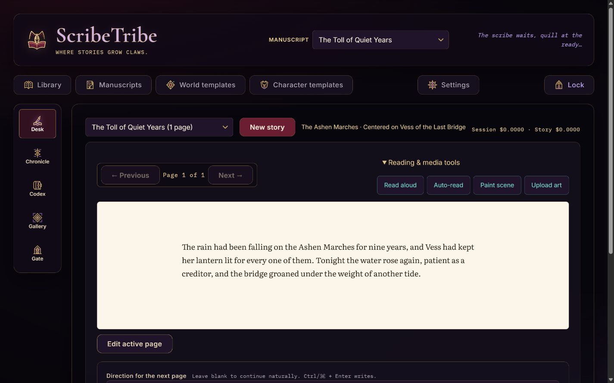
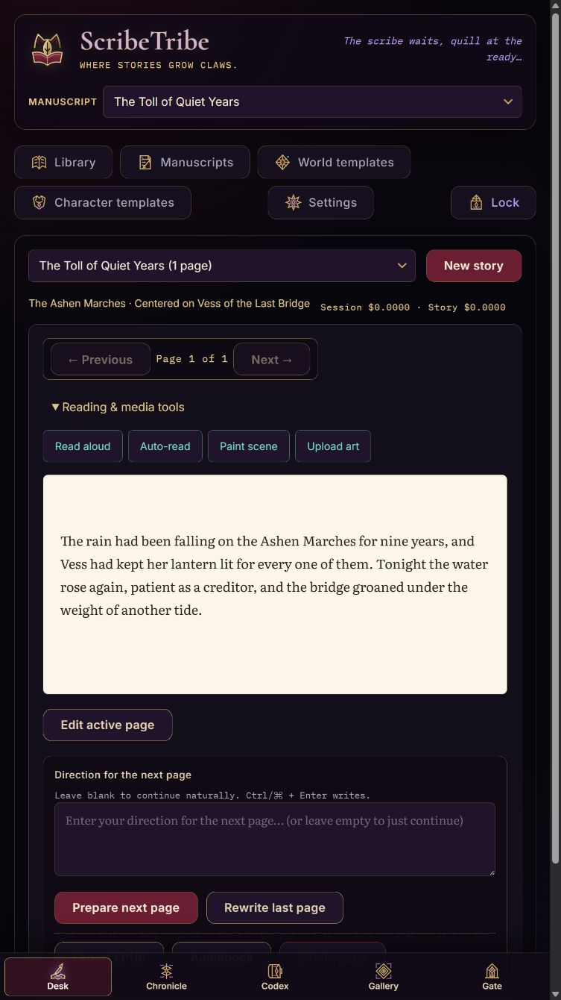

Write, remember, illuminate, bind—and keep every story under your control.
4.0 beta · single-owner self-hosted edition
ScribeTribe 4.0.0-beta.1 · September 2026
ScribeTribe 4.0Start here
Before the first page
Know the shape of the Scriptorium
ScribeTribe is a self-hosted, single-owner environment for human-led, AI-collaborative writing. You supply intent, taste, direction, revision, and the final word on canon; the Scribe accelerates drafting, continuity work, illustration, and narration without taking ownership of the manuscript.
4.0 clean break
Start with a new, empty DATA_DIR. Never point 4.0 at a 3.x database. Keep ScribeTribe 3.2.2 and its data intact for historical work; there is no in-place migration.
Library
Desk
Chronicle
Codex
Gallery
Gate
LibraryChoose manuscripts and manage reusable world and character templates.
DeskRead, edit, direct, generate, and turn the current page.
ChronicleNavigate volumes, chapters, pages, history, and recovery.
CodexInspect what the story remembers and apply explicit corrections.
GalleryUpload or generate art, then place it without changing prose or canon.
GateBack up the project, publish formats, or share a frozen reading copy.
The collaboration—and its boundary
The author leads
Set the premise and constraints, direct each page, judge the prose, revise it, correct remembered facts, select art, and decide what leaves the installation.
The AI accelerates
Generate and prepare pages, extract continuity, suggest foundations, paint, and narrate. These actions send necessary context to your configured provider.
You can still write, organize, import, back up, and publish without AI. That is a resilience and control feature—not the intended center of the experience.
Contents
01Install & unlock3
06History & recovery9
02Library & navigation4
07Chronicle & Codex10
03Begin a manuscript5
08Gallery & Gate11–12
04Templates6
09Safety & operations13–15
05The Desk7–8
10Quick reference16
ALore of the Scriptorium17
USER GUIDE · 4.0 beta2
ScribeTribe 4.0Install & unlock
01 · First run
Open a sealed local Scriptorium
ScribeTribe runs on your own machine rather than in a maintainer-operated cloud. By default, only a browser on that same machine can reach it. Node.js 22.5 or newer is required.
Quick installation
git clone https://github.com/rthorman/scribe-tribe.git
cd scribe-tribe
bash setup.sh
$EDITOR backend/.env
./start.sh
Open http://localhost:3000. On the first launch, the terminal prints a one-time setup code. Enter it in the browser, then choose a distinctive password or passphrase of 15–128 characters.
Before starting 4.0
Create a new empty data directory. If the checkout already has 3.x data, set DATA_DIR=../database-v4 in backend/.env.
Configure a provider key for the core collaborative workflow. Local writing and project care remain available without one.
Start the server and keep the terminal available for status and recovery.
First unlock
Copy the one-time code from the server terminal.
Set the owner password. There are no usernames or multiple roles.
Enable Keep this scriptorium unlocked only on a device you control.
What the network words meanlocalhost and 127.0.0.1 mean “this computer only.” A LAN is your home or office network. HTTP sends traffic without transport encryption; HTTPS encrypts the trip between browser and server, so a password or manuscript is not readable to other equipment along the route.
If another device needs durable access, keep ScribeTribe on 127.0.0.1 and put an HTTPS reverse proxy in front of it. In plain language, that is a small front-door service which receives the encrypted connection and passes it to ScribeTribe locally. If that setup is unfamiliar, ask someone who administers networks rather than exposing ScribeTribe directly over HTTP.
Daily lock and recovery
Lock revokes the current browser session.
Settings → Security changes the password and revokes other sessions.
If the password is forgotten, stop the server and run npm run auth:reset -- --yes from backend. This removes the local owner and sessions, not manuscripts or media.
Access control, not disk encryptionThe web password does not encrypt the SQLite database, images, audio, or portable archives. Use full-device encryption and protect exported files.
01 · Install & unlock3
ScribeTribe 4.0Library & navigation
02 · Orientation
The Library is the threshold
The Library owns manuscripts, reusable templates, import and restore, recent work, recovery notices, and the path to Settings. Select a manuscript to enter its five-destination workspace.

1234
Desktop Library. The gothic frame orients you; actions remain literal and the manuscript surface stays quiet.
1Manuscript selector — switch the active manuscript.
4Start actions — continue, begin, import, or open the Desk.
Navigation stays named
Desktop and landscape tablet use a labelled navigation rail. Portrait tablet and compact layouts use the same five labels in a bottom bar. Nothing important depends on hover or a hidden gesture.
A useful distinctionGlobal templates can be reused. Manuscript-local snapshots belong to one manuscript. The Codex explains the latter; Library templates never silently rewrite an existing manuscript.
02 · Library & navigation4
ScribeTribe 4.0Begin a manuscript
03 · One sheet, three paths
Begin with prose, a seed, or an import
Choose Begin a manuscript or Import prose from the Library. The start sheet asks only for information needed by the path you choose.
Write the opening
Enter or paste the first page, then let the Scribe continue under your direction. This is a useful way to establish your voice before collaboration begins.
Give the Scribe a seed
Provide a premise and optional direction, then review and shape the generated opening. This is the fastest route into the collaborative loop.
Import existing prose
Map recognized headings to structure, or begin as a single chapter. Review the result before continuing.
The short start flow
Choose one start path and name the manuscript.
Select maturity, narrative role, world, and cast only where relevant.
Optionally open Foundations for premise, voice, point of view, tense, arcs, and constraints.
Enter the Desk with Volume I and Chapter I already created.
Foundations are guidance, not a gate
AI suggestions in Foundations are drafts. Accept them field by field. You can begin writing without completing every setting, and you can return later.
Human ledThe Scribe proposes; you direct, accept, rewrite, reject, and correct. Its continuity record is inspectable evidence, not authority over your prose.
AI acceleratedProvider setup appears when collaboration first needs it. Read the provider, model, data, and cost review before accepting.
03 · Begin a manuscript5
ScribeTribe 4.0Templates
04 · Reusable material
Build worlds and characters once
World and character templates live in the global Library. They are reusable source material—not remote truth imposed on every manuscript.

The global world catalogue. Create without an image when you want a fully local path; painting is a separate paid action.
World templates
Setting, genre, atmosphere, and a lorebook of canonical facts.
Optional establishing art.
Reusable across manuscripts.
Character templates
Identity, appearance, personality, background, and home world.
Optional reference portrait.
Reusable in centered or ensemble casts.
What happens when you cast a manuscript?
Library template
Choose for manuscript
Frozen snapshot
Pages add memory
Author corrects
A manuscript receives a local snapshot. Later Library edits do not silently change that snapshot. When a template has changed, Codex can show a field-level difference and lets you accept only the fields you want.
Canon ruleReusable sheets are reference material. Committed pages, remembered canon, and explicit author corrections define the running story.
04 · Templates6
ScribeTribe 4.0The Desk
05 · The writing loop
The manuscript stays at the center

12345
The Desk on desktop. Controls frame the prose; artwork never sits behind the manuscript.
1Five stable manuscript destinations.
2Active manuscript and measured session/manuscript cost.
3Previous/next page controls.
4Read-aloud and media tools.
5Editable, quiet manuscript surface.
The ordinary loop
Read
Edit if needed
Direct or leave blank
Turn the page
Repeat
Prepared successorAfter a successful page, ScribeTribe can quietly prepare exactly one successor. Prepared prose is inert: it does not enter canon or continuity until you commit it.
05 · The Desk7
ScribeTribe 4.0Direction & prepared pages
05 · The writing loop
The direction changes the action

Portrait tablet keeps the five destinations named and the manuscript comfortably readable.
When direction is empty
If a prepared page waits, Next Page commits that exact prose. It does not call the provider for a different version.
When direction has text
The action becomes Generate as directed. Pressing it deliberately replaces the waiting preview with a new paid request.
If you clear the direction
The original prepared page is still waiting. The action returns to Next Page.
If a request fails
No page is added. Your direction stays visible, and Try again names the recovery path.
Cost realityA normal AI-assisted page may involve prose, continuity extraction, and preparation of the next page. Estimates are not invoices. Set a hard spending limit on a dedicated provider key.
Other Desk actions
Edit active page changes current prose.
Rewrite last page requests a new version.
Read aloud / Auto-read invokes the selected narrator.
Open Gallery takes you to the single place for uploads, AI painting, metadata, and placement.
05 · Direction & prepared pages8
ScribeTribe 4.0History & recovery
06 · Know which change you are making
Copyedit prose—or return canon
An older page offers two deliberately different operations. Choose by consequence, not by mood.
Action
What changes
What does not
Use when
Copyedit this page
Visible and exported wording.
Remembered Codex state is not recalculated.
Fix spelling, phrasing, and presentation without branching canon.
Return manuscript to this page
Removes all later canonical pages and prepared work.
The removed suffix is retained for bounded recovery.
You want the narrative to continue from an earlier point.
Read the exact rangeThe return confirmation names the volumes, chapters, pages, narrative count, prepared work, and recovery period. The action reads Return and remove N later pages.
Chronicle keeps the trail visible
Navigate structure
Volumes contain chapters; chapters contain pages.
The current tail, prepared page, memory coverage, art placements, and recovery records have distinct markers.
Rename historical structure without pretending prose can be freely reordered.
Recover safely
Recovery records show removal time, range, and expiry.
One-click restore is offered only when the current canon still permits it.
If later canon diverged, export the removed material rather than silently merging it.
06 · History & recovery9
ScribeTribe 4.0Chronicle & Codex
07 · Structure and truth
Chronicle says where; Codex says what
Chronicle
Use it to move through volumes, chapters, pages, historical states, and recovery records.
Question: Where am I in the work?
Codex
Use it to inspect manuscript-local foundations, page-provenanced remembered canon, arcs, threads, and corrections.
Question: What is true now?
The three Codex layers
Foundations — author intent and the manuscript’s local world/cast snapshots.
Remembered canon — facts, events, conditions, goals, threads, and arc movement linked to source pages.
Author corrections — explicit authoritative overrides with visible impact state.
Correct a remembered fact
Select a fact or field and inspect its current value and page evidence.
Enter the corrected value.
Review detected later conflicts.
Choose to apply the correction, mark the prose intentional, return the manuscript, or cancel.
Keep the resulting correction record inspectable.
AI does not get the last wordAI may summarize possible impacts, but it never applies a correction. Existing prose is never automatically rewritten.
Coverage and repair
If a page lacks a continuity record, the Codex identifies it. Building or rebuilding memory is explicit, proceeds page by page, and receives a cost review. It never triggers a surprise whole-story replay.
07 · Chronicle & Codex10
ScribeTribe 4.0Gallery
08 · Illuminate without changing canon
Upload or paint, then place deliberately
Two equal paths
Upload an image
Choose a file with the native picker.
Review the local preview and metadata-removal notice.
Add a title and useful alt text.
Keep it in Gallery or place it before/after a narrative page.
Paint with AI
Write or condense a visible prompt.
Choose references and quality deliberately.
Review cost and generate.
Place the result exactly like uploaded art.
Placement is noncanonical
Moving or unplacing art does not change page numbers, prose, or continuity. Art anchored to a page that is later removed remains stored in Gallery but becomes unplaced.
Upload privacyAn upload is validated, normalized to metadata-free WebP, and kept local. It is not sent to a provider unless you later select it explicitly as a generation reference and grant permission.
Provider refusalIf an image provider refuses a prompt, ScribeTribe explains the refusal, keeps the original upload and prompt unchanged, and shows any sanitized editable prompt. Nothing retries until you press again.
Technical errors stay technical
Unsupported encoding, damaged files, excessive file size, or excessive dimensions are reported as constraints. The application does not semantically classify or moralize about uploaded subject matter.
08 · Gallery11
ScribeTribe 4.0Gate
08 · Let the work leave safely
Backup, publication, and sharing are different
Back up the project
Create a full-fidelity .scribetribe v2 archive. Choose whether to include visuals, audio, and working history.
Prepare for publication
Review one normalized book structure, metadata, front/back matter, art, and style before choosing formats.
Share a reading copy
Create an immutable, expiring, revocable snapshot. Anyone holding its capability link can read it.
You need…
Choose…
Remember…
Restorable project state
Full project backup
Portable archives are unencrypted and exclude local credentials, sessions, secrets, and share capabilities.
A book for readers/editors
Publication export
Multiple selected formats come from one normalized snapshot, keeping metadata and structure aligned.
Temporary browser reading
Public reading share
The copy is frozen. Create a new snapshot after material manuscript changes.
Choose a file by what happens next
.scribetribe
A restorable ScribeTribe project backup, not an ebook. Keep it private and use Gate to restore it.
EPUB
A reflowing ebook: the reader can change type size and the pages adapt. Best for ebook readers and reading apps.
PDF
A fixed-page document. Best when exact page appearance, printing, or simple review matters.
DOCX / ODT / RTF
Editable word-processing files. Choose the format your editor or publisher actually uses.
HTML / Markdown / text / JSON
Open or technical formats for websites, simple text tools, or data workflows; they are rarely the friendliest reading copy.
Share safely
Review the included revision, art, and expiry.
Create the share only behind a correctly configured HTTPS reverse proxy.
Copy the returned link once and send it through an appropriate private channel.
Revoke it in Gate as soon as it is no longer needed.
Capability linkAnyone with the link can read the frozen snapshot until expiry or revocation. Never place the capability in query strings, analytics, referrers, proxy logs, or public screenshots.
08 · Gate12
ScribeTribe 4.0Backup & restore
09 · Preserve the whole installation
Use two forms of backup
Portable project backup
Create it in Gate, include the material you need, download it, and store it on encrypted storage.
Portable: good for reviewed transfer and restore.
Cold DATA_DIR copy
Stop ScribeTribe and copy the entire data directory as one unit.
Complete: also preserves owner, sessions, recovery state, and local share records.
Before an upgrade
Record the installed commit, Node version, and data paths.
Finish active provider/publication jobs and create a full Gate backup.
Stop ScribeTribe and make a dated cold copy of the complete data directory.
Install the reviewed release and validate the catalogue before resuming work.
Restore a 4.0 backup
Start 4.0 with a new, empty DATA_DIR.
Open Gate and preflight the archive.
Review exposure and collisions; choose Replace everything only for an intentional full restore.
Verify hierarchy, revisions, continuity, media, prepared work, snapshots, and settings.
Export again and compare with the source evidence.
Never mix generationsScribeTribe 4.0 does not open 3.x databases or import format-v1 archives. Never combine a database from one backup with media or transfer directories from another.
What the portable archive deliberately omits
Passwords, sessions, provider secrets, remembered paid consent, recovery credentials, and public-share capabilities/records. The archive itself is not encrypted.
09 · Backup & restore13
ScribeTribe 4.0Provider, cost & privacy
09 · Know the boundary
The partnership is the point; control stays human
ScribeTribe is built for an author and AI to work in a deliberate loop. It has no maintainer cloud, analytics, advertising, tracking pixels, or crash telemetry; the operator controls the installation and chooses the provider connection.
Provider compatibility is not promisedOpenRouter is the only AI supplier ever tested with ScribeTribe. Another supplier may not expose compatible models, may not support image generation, narration, reasoning controls, or model discovery, and may not work at all. An “OpenAI-compatible” label is not enough to guarantee the complete ScribeTribe workflow.
Credential choices
Environment: a key in the operator-managed backend environment.
Session memory: available only for the current process session.
Encrypted vault: saved locally and unlocked after restart. APIs never return the secret.
Spend limit firstCreate a dedicated provider key and set a hard upstream spending limit before using AI. ScribeTribe’s live estimates and session/manuscript totals are good-faith guidance, not an invoice or guarantee.
Typical provider data
Directions and recent prose.
Relevant remembered canon.
Selected world, cast, tone, and model settings.
Text sent for narration.
Image prompts and explicitly selected references.
Prepared successor context.
Continuity-extraction context.
Quality and generation settings.
Browser supportScribeTribe is tested only in Google Chrome. A current standards-respecting browser such as Edge, Firefox, or Safari should work. Should. If something behaves strangely elsewhere, reproduce it in Chrome before deciding the application itself is broken.
Local control remains available
Browsing the Library, reading pages, manual editing, organizing, local image upload, publication export, and portable backup do not require an AI call. This lets you keep working and care for the project without a provider; the largest creative gains still come from directing, reviewing, and revising AI-assisted work.
Local files remain readableThe login protects web access, not storage at rest. Anyone who can read the operating-system account or unencrypted disk can read the database and media. Use device encryption and access-controlled backups.
When something is exposed
Provider key: revoke it at the provider immediately.
Share capability: revoke the share in Gate.
Archive: treat it as manuscript disclosure.
Logs: never publish real prose, prompts, cookies, authorization headers, local paths, or provider responses.
09 · Provider, cost & privacy14
ScribeTribe 4.0Comfort & troubleshooting
09 · Daily practice
Make the Desk fit the way you work
Input and reading
Every primary path works with keyboard, touch, mouse, or stylus.
Visible focus and labelled controls support keyboard navigation.
Portrait tablet keeps the bottom navigation stable; desktop uses a rail.
Typography, line length, manuscript theme, and reduced motion persist in Settings.
Placed publication art should have useful alt text.
Routine states
Saved / Saving appears quietly near the page.
Offline—kept locally means browser-local editing state needs the server again.
A low-storage banner appears below 1 GB or 5% free space.
Provider and publication work should settle before shutdown or backup.
Fast diagnosis
Symptom
What to check
4.0 refuses to start
Confirm Node 22.5+ and a new empty DATA_DIR; do not reuse a 3.x database.
Unlock fails repeatedly
Wait for the temporary throttle, verify the password, or use terminal recovery after stopping the server.
AI action is unavailable
Open Settings; confirm provider profile, credential source, vault unlock, model role, and network access.
Next Page is disabled
A successor may still be preparing. Do not start a competing request.
Continuity looks wrong
Open Codex, inspect page evidence, and apply an explicit correction or rebuild missing coverage.
A removed suffix cannot restore
Later canon diverged. Export the recovery record rather than forcing a merge.
A share does not open
Check HTTPS proxy configuration, expiry, and revocation. Never move the capability into a query string.
Before asking for helpRecord the application version, browser, Node version, exact visible error, and correlation reference. Redact manuscripts, credentials, cookies, share links, prompts, and local paths.
09 · Comfort & troubleshooting15
ScribeTribe 4.0Quick reference
10 · Leave this page near the Desk
A safe author’s checklist
Before writing
4.0 uses a new empty data directory.
The provider key has a hard spend limit.
The correct manuscript is selected.
World and cast snapshots are the intended ones.
During writing
Empty direction commits the waiting page.
Typed direction deliberately requests a replacement.
Copyedit changes prose, not remembered canon.
Return manuscript removes later canon with bounded recovery.
Before sharing
The snapshot revision and included art are correct.
HTTPS is configured and logs omit capability headers.
VersionThis guide describes ScribeTribe 4.0.0-beta.1. Interface details can change during the beta; consult the documentation shipped with the installed tag.
The next page is yours.
Lead with intent. Let the Scribe accelerate. Keep canon human, the provider bounded, and the backups close.
10 · Quick reference16
ScribeTribe 4.0Addendum · Lore
A · The tribe behind the threshold
The Scriptorium exists to serve the Story
It stands in the hour between the last candle and dawn: an impossible house of black oak, moonlit glass, chained archives, and doors that open wherever an unfinished tale still calls.
Long ago, a nameless empire burned its histories so no future voice could contradict the throne. The fire consumed the royal archive, but not the Stories inside it. They fled into ink, shadow, and the margins of unwritten pages. Around those surviving sparks the Scriptorium grew, and from its living script came the first feline scribes—adult, self-possessed keepers of invention, memory, and illumination. No crown owns them. No model commands them. They answer to the Story, and they lend their craft to the author who leads it.
Scribe · Warden
Vesper Quill
Wine-black curls, amber eyes, ivory sleeves, and a fitted leather bodice mark the keeper of the threshold. Vesper hears the first sentence before it is spoken. She opens the door, guards the author’s intent, and waits with her quill poised—but never writes past the human hand that leads her.
Illuminator
Cinder, the Inkbreaker
Sleek and quick, with copper ears, a high dark-red tail of hair, and flowing sheer silks in garnet and gold, Cinder draws light through stubborn ink. She gives worlds a face, casts a silhouette, and turns scenes into illumination—without confusing the image for the truth of the page.
Archivist
Moth, Archivist of Forgotten Things
Silver-haired and grave in violet-black robes, Moth wears a narrow velvet collar whose small bell sounds when a fact is almost lost. She gathers revisions, broken threads, and discarded paths into her chained archive. She remembers evidence, not destiny, and yields every correction to the author.
The covenant of the tribe
The scribes can propose, remember, illuminate, bind, and guard. They cannot decide what a manuscript means, which truth should survive revision, or when a Story is finished. Those judgments belong to the author. Their promise is simpler and older: keep the work legible, keep its consequences visible, and never place the machinery above the tale it was built to serve.
The author leads. The tribe attends. The Scriptorium endures. All are servants of the Story.